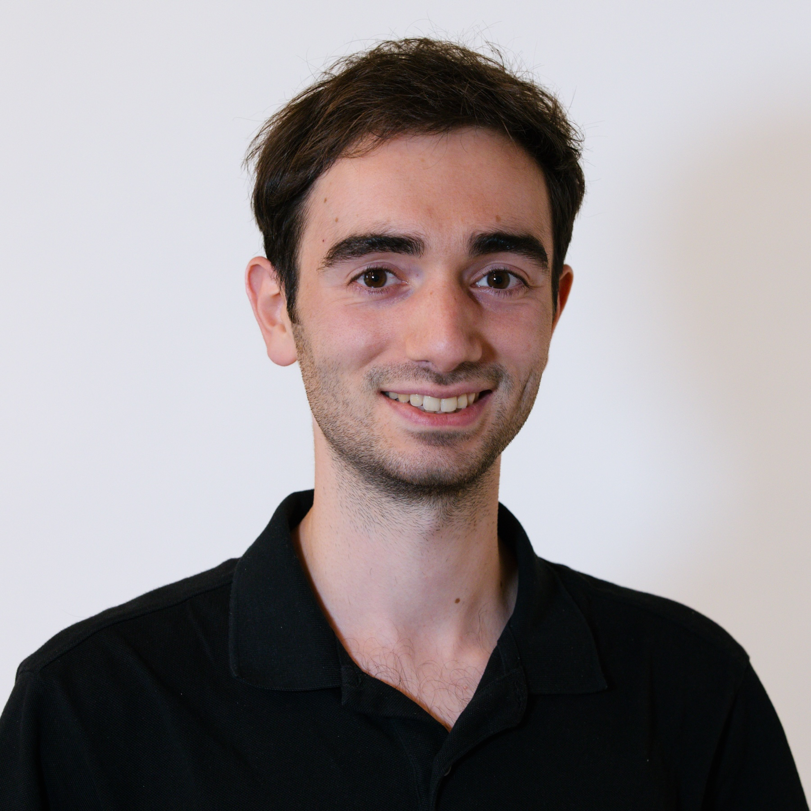

About me
Hi, I am Gimmy and I am a physicist.
Currently I am a postdoctoral member at the Institute for Advanced Study in Princeton, New Jersey. I completed my PhD in 2024 at GRAPPA, University of Amsterdam, with professors Daniel Baumann and Gianfranco Bertone.
My research interests span gravitational physics, theoretical and astrophysical aspects of black holes, gravitational-wave astronomy, dark matter and beyond the Standard Model particle physics. I devoted a major part of my PhD to the study of gravitational-wave signatures of black hole superradiance in binary inspirals. Check out my publications on InSpire and Google Scholar.
I spend a lot of time and energy organizing the Physics and Math Olympiads in Italy, for which I enjoy creating many new problems. Similarly, I like being a teaching assistant and preparing exams for physics courses at University.
Other subjects and activities I am passionate about include: space exploration, Pokémon videogames, evolutionary biology and various sports. I also love hiking and exploring wild locations: my favorite one so far has been Kangaroo Island, in South Australia.
Short CV
| 2024-present | Member, Institute for Advanced Study, Princeton |
| 2020-2024 | PhD, University of Amsterdam |
| 2015-2020 | Diploma, Scuola Normale Superiore |
| 2018-2020 | Master's degree, University of Pisa |
| 2015-2018 | Bachelor's degree, University of Pisa |
Contact
| tomaselli@ias.edu | |
| Address | Office BH-225, 1 Einstein Drive, Princeton, NJ 08540 (USA) |